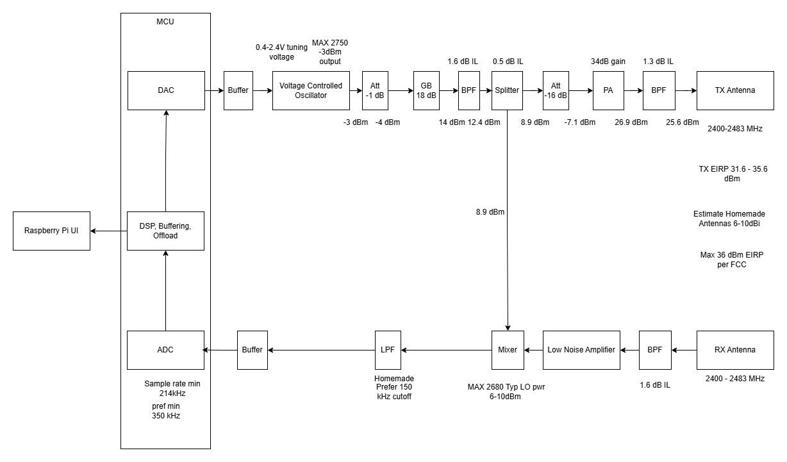
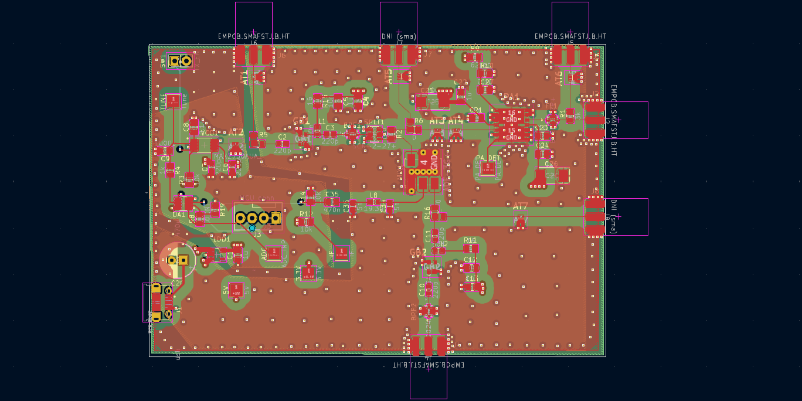
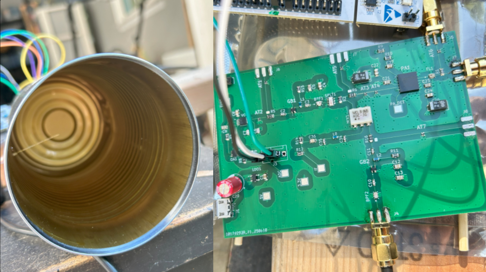
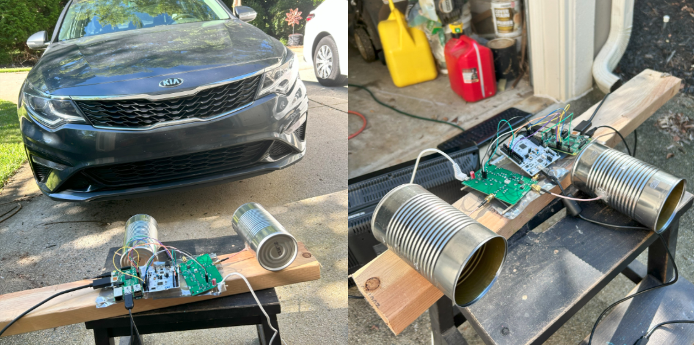
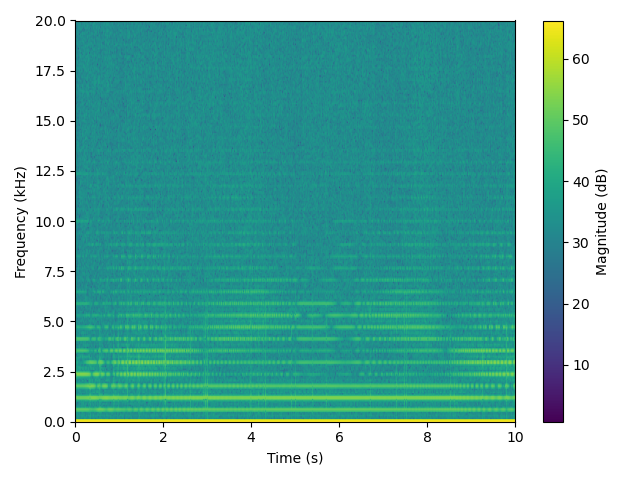
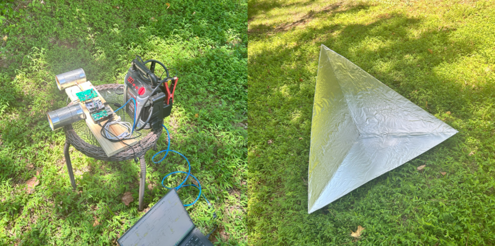
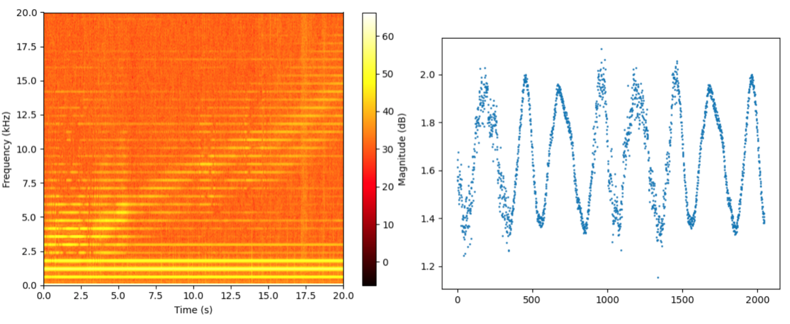

Planning
I wanted to learn more about RF design and how radars work, so I decided to design a radar system. I was able to accomplish this, detecting targets at over 60 ft, for under $100 (including parts and PCB fab). I wanted to be able to detect range, but not have to worry about pulses, so I decided to make a continuous wave radar, with frequency modulation (FMCW). For code and design files, see the GitHub repo.
The block diagram shows my high level design and power estimates. I am using a microcontroller to generate a ramp signal for the VCO, allowing for programmable frequency sweeps. I am using a Raspberry Pi (which I already had) to run the user interface and signal processing program. I am also using homemade cantennas. I used this block diagram to help me check part specs, and to make sure I would be within FCC limits. I chose to use the 2.4GHz ISM band because parts should be easy to find.
I designed the PCB in KiCAD. I used a 4 layer design. I added many configurable SMA taps and test pads for ease of debugging. In retrospect, I should have used test hooks instead of pads, and also added an LED to indicate power. I am using micro USB for power, SMA edge mount for coax connections, and soldered jumper wires for interfacing with the microcontroller. I switched the LNA for another gain block to limit small pitch QFN parts since I would be assembling by hand.
Assembly/Development
I used the STM32 F446RE Nucleo board for my microcontroller. It has an onboard DAC and ADC. I programmed it in C, setting up a double buffering arrangement with DMA to fill and empty the buffer using ADC and SPI peripherals. I also make a static buffer and send it to the DAC to generate the ramp/triangle wave.
I use GT's Hive makerspace for assembly. I used their laser cutters to cut a mylar stencil. All but the op amp and VCO footprints came out right. I used the reflow oven to solder most of the SMD components. I soldered the 0.65mm pitch op amp and VCO by hand, since their footprints melted together in the stencil. Then I soldered THT components and SMA connectors to the TX, RX, and main TX test tap locations (I didn't want to hurt the signal analyser with the real TX signal). I verified my design by checking the power rails and the TX tap using a DMM and signal analyzer.
Additionally, I found cans that were the right dimensions to serve as a waveguide for 2.4GHz. Then I stripped some coax jumpers and drilled holes in the cans. I was able to use the Hive's VNA to tune my cantenna's S11 for my band before soldering.
Testing and Improvements
Iteration 1 - Initial
 My first iteration was just to verify functionality. I used a monitor, keyboard, and mouse for the Pi, plus extension cords and USB adapters for power. Nothing was secured in place. This made setting up very unwieldy. However, by backing the car up then going forward I was succesfully able to see a track in the spectrogram.
Iteration 2 - Improved Target and Setup
 This iteration, I secured everything to a board for portability. I also got rid of many cables and the need for a monitor by using VNC to the Pi with my laptop. Instead of extension cords, I used a battery. I also built a corner reflecter to have a better target when testing. In this test, I realized that when I turn the radar on, it stops bluetooth from working nearby.
You can clearly see the increasing beat frequency as I walked the corner reflector away. The second image is a snapshot of the voltage seen by the ADC when I held the corner reflector ~1m away. You can see that I am not using the full range of 0-3.3V. You can also see that the ADC doesn't look very good. A lot of the noise is probably coming from there, not actual thermal noise. So, since the deviation from 1.65V is about 0.4V, I can add ~3-4x gain to the buffer amp I am using in order to reduce the effect of the low quality ADC readings (I made this configurable in the PCB layout). Also, the constant lines at the bottom are annoying, and I can remove those with DSP.
Iteration 3 - Tuned Gain, Better Processing
In progress